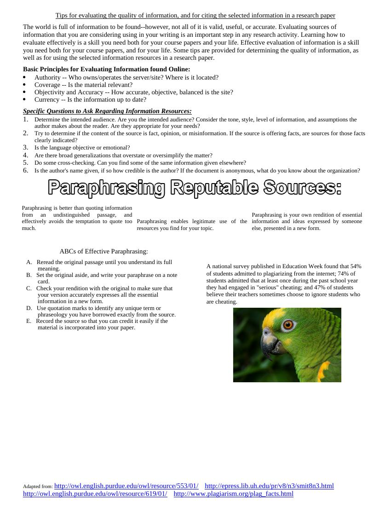

The most important concept I took away from this module was being able to assess and properly summarize what I found online. I learned that there are sources of information that may or may not be credible and it's essential to consider factors such as authority, accuracy, objectivity, and currency of the information found. I also learned that when you paraphrase, you're taking someone else's ideas and rephrasing them using your own language while crediting the original author. These same skills can be applied to the real world (e.g., in schools, workplaces, and daily life) where individuals utilize information from the internet.